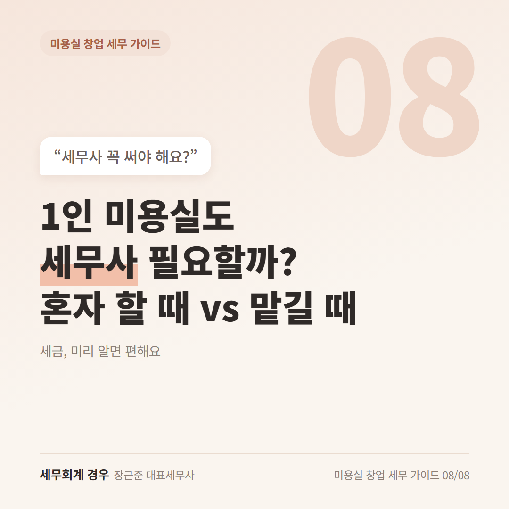
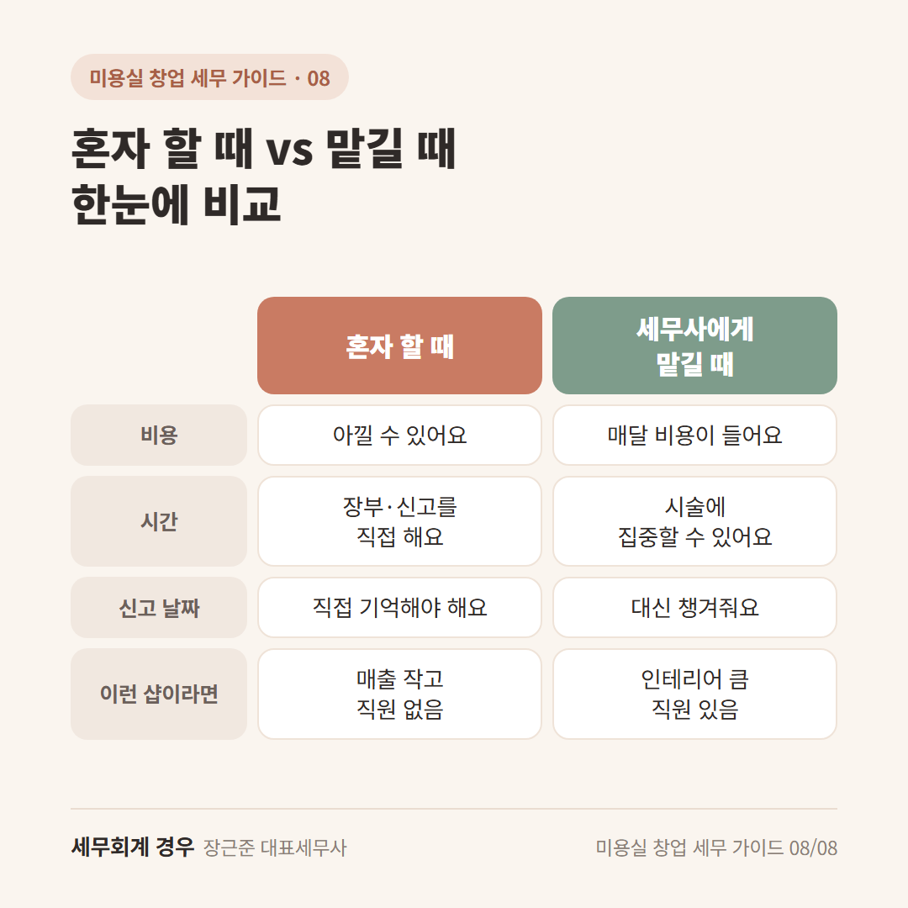
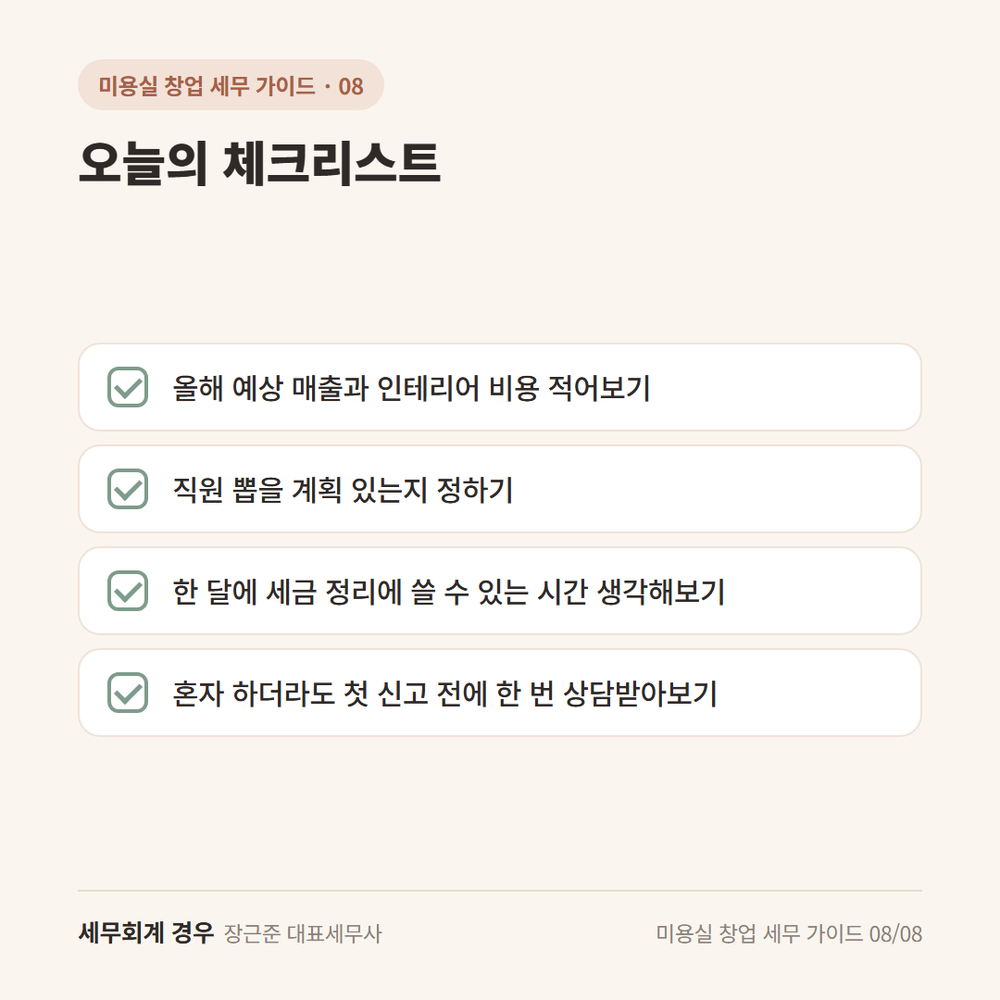

미용실 창업 세무 가이드 · 8번째 글
1인 미용실도 세무사 필요할까? 혼자 할 때와 맡길 때 비교

마지막 손님 보내고 청소까지 끝낸 밤,
"나 혼자 하는 작은 샵인데, 세무사까지 필요할까?" 하는 생각 드시죠.
1인 미용실 세무사, 꼭 써야 하는 건 아니에요.
혼자 할 때와 맡길 때를 비교해보고 편한 쪽을 고르시면 돼요.
1. 혼자 할 때: 비용은 아끼고, 시간은 조금 들어요
홈택스(국세청 누리집)에서 원장님이 직접 신고할 수 있어요.
매출이 크지 않고, 직원이 없고, 인테리어 비용도 적다면 혼자 해볼 만해요.
다만 이런 부분은 챙기셔야 해요.
- 신고 날짜를 직접 기억하기
- 영수증 정리하고 장부 쓰기
- 비용으로 넣을 수 있는 걸 직접 찾아보기
시술하랴, 예약 받으랴 바쁘다 보면 이 부분이 꽤 번거로울 수 있어요.
2. 맡길 때: 원장님은 시술에 집중할 수 있어요
세무사에게 맡기면 기장(샵의 돈 들어오고 나간 걸 장부로 정리하는 일)과 신고를 대신 해요.
원장님은 영수증과 자료만 잘 넘겨주시면 돼요.
좋은 점은 이런 거예요.
- 신고 날짜를 대신 챙겨줘요
- 인테리어 부가세 환급 같은 걸 놓치지 않게 도와줘요
- 직원이 생기면 4대보험·원천세 신고도 같이 볼 수 있어요
- 궁금한 게 생기면 바로 물어볼 곳이 생겨요
물론 매달 비용이 들어요.
비용은 매출이나 직원 수에 따라 달라서 상담으로 안내받으시면 돼요.

3. 이럴 땐 한 번 상담받아보세요
예를 들어 이런 경우예요.
- 인테리어·기계에 큰돈이 들어갔을 때
- 디자이너나 스태프를 뽑을 계획이 있을 때
- 정액권·회원권 매출이 많을 때
- 매출이 늘어서 장부가 복잡해졌을 때
샵이 커질수록 더 꼼꼼한 장부를 써야 할 수도 있어요.
그 시점이 언제인지는 상황마다 달라서 상담으로 확인하시는 게 좋아요.
오늘의 체크리스트

- 올해 예상 매출과 인테리어 비용 적어보기
- 직원 뽑을 계획 있는지 정하기
- 한 달에 세금 정리에 쓸 수 있는 시간 생각해보기
- 혼자 하더라도 첫 신고 전에 한 번 상담받아보기
자주 묻는 질문
창업 전부터 세무사를 정해야 하나요?
꼭 그래야 하는 건 아니에요. 다만 사업자등록이나 간이·일반과세자 고르기 전에 한 번 물어보면 편해요.
처음엔 혼자 하다가 나중에 맡겨도 되나요?
네, 괜찮아요. 그동안 모아둔 영수증과 통장 내역만 있으면 이어서 맡기실 수 있어요.
마무리
1인 미용실 세무사는 "필수"라기보다 "시간과 마음을 아끼는 선택"이에요.
내 샵은 혼자 해도 될지, 창업 전에 한 번 편하게 물어보세요.
개인 상황에 따라 달라질 수 있으니 자세한 내용은 상담으로 확인하세요.